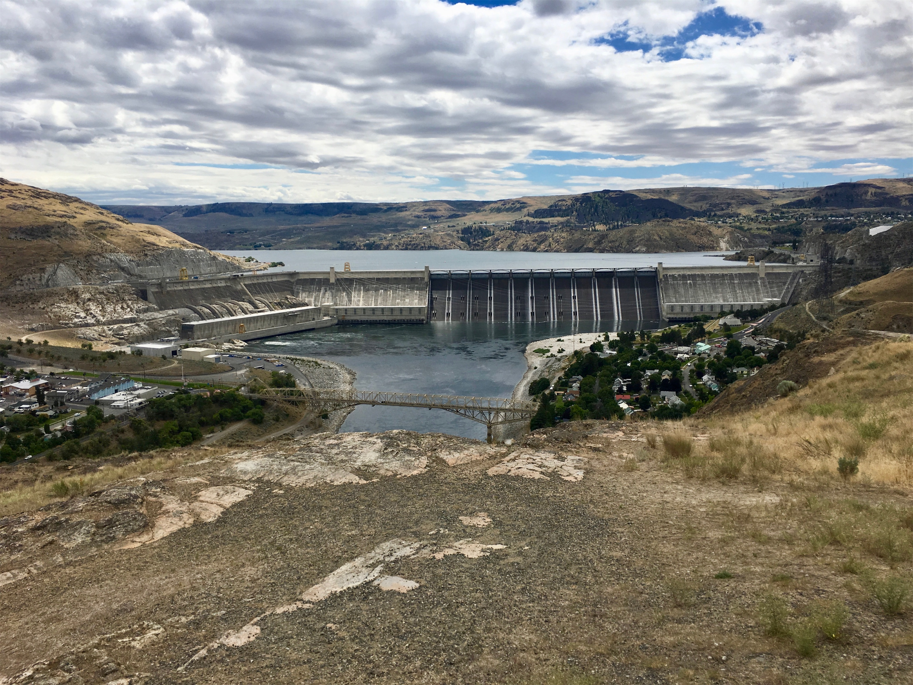
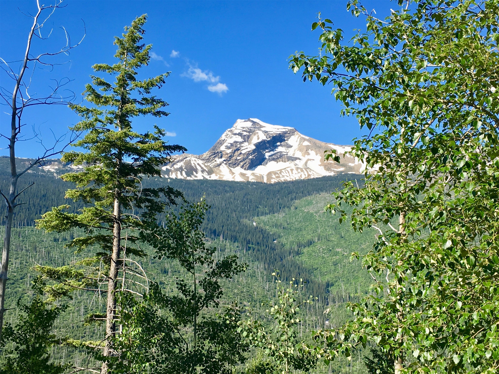
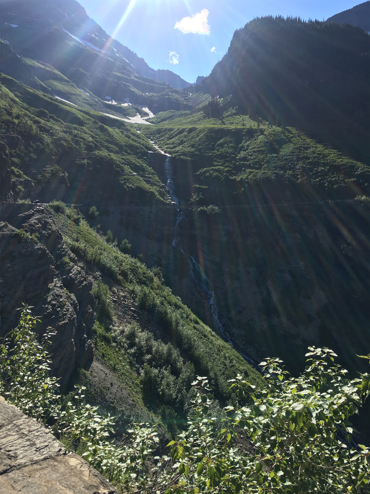
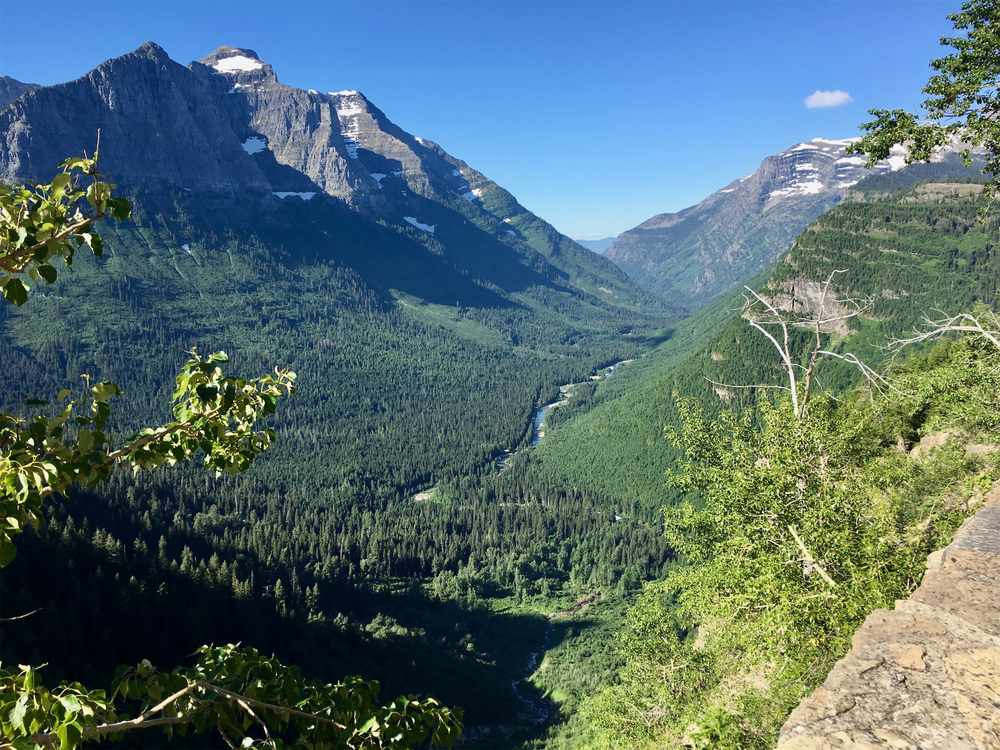
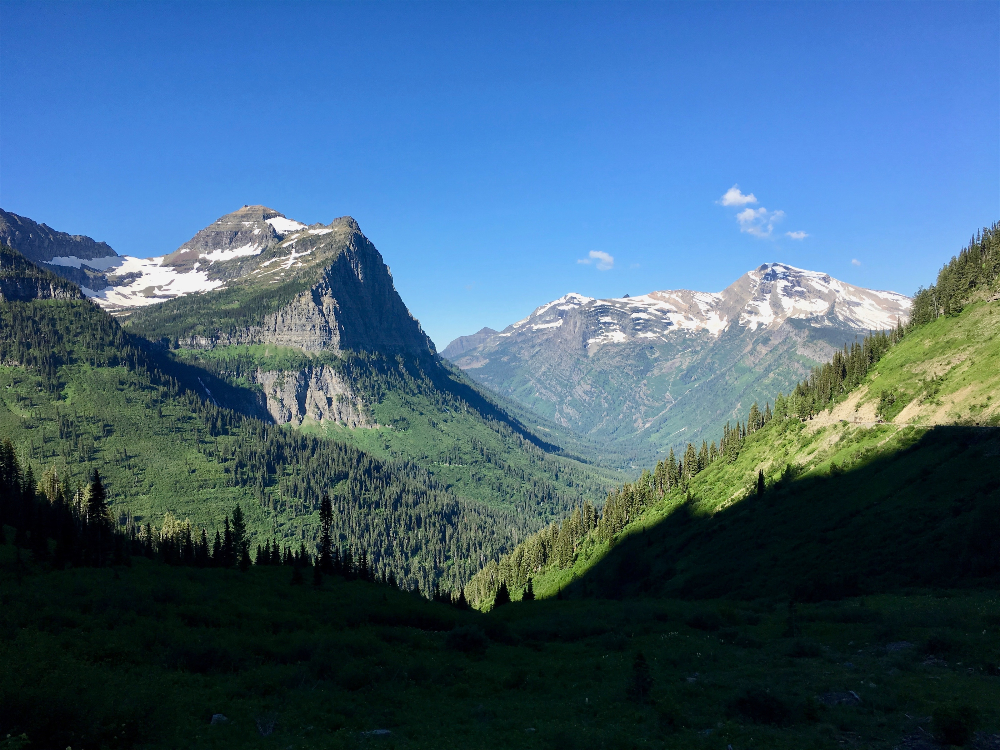
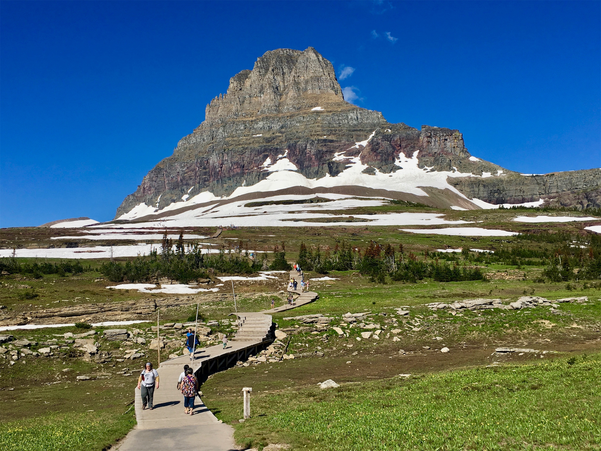
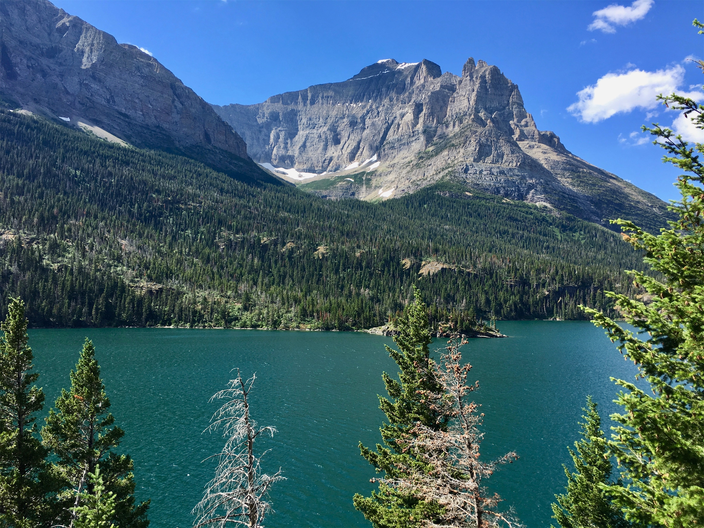
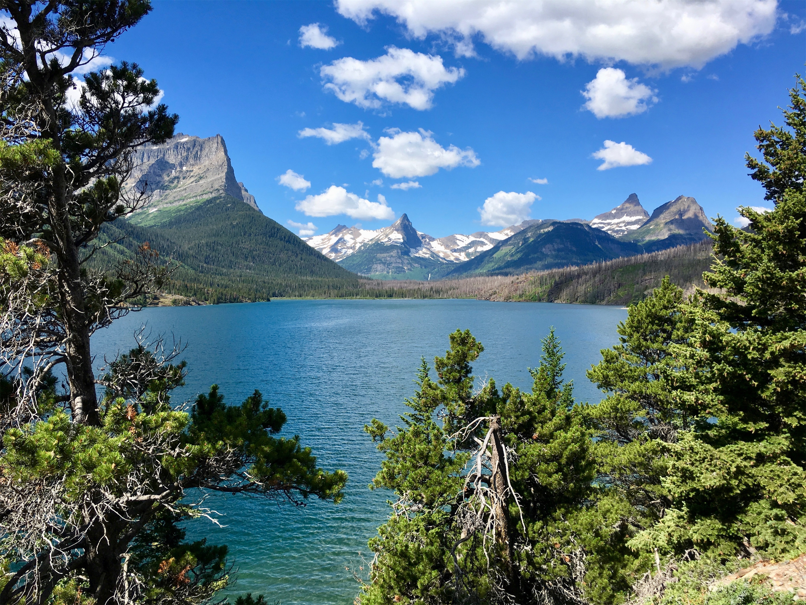

Thursday, Jul 12, 2018, 8:16 AM MDT
Apgar Visitor Center, Essex, MT, United States
63°F Sunny
63°F Sunny
![]()
7/9 North Cascades Visitor Center, WA -> Winthrop, WA 75 mi, 2 hr
7/10 Winthrop, WA -> Spokane, WA 193 mi, 6.5 hr
7/11 Spokane, WA -> Glacier Guides Lodge, West Glacier, MT 274 mi, 6 hr
7/12 Glacier Guides Lodge, West Glacier, MT -> Going-To-The-Sun Road, MT (RT) 102 mi, 5.25 hr
7/13 Glacier Guides Lodge, West Glacier, MT 0 mi, 0 hr
Trip Total: 7,477 mi
Continuing east through the Cascades, we came to our overnight stay in historic Winthrop, WA, a small town complete with a western-style downtown and a boardwalk in the lush Methow Valley, home to apple orchards. We had dinner at a hard cider tavern, and of course had apple pie for desert. In the morning, we continued east on Highway 20 to the next town, Twisp, and had the best breakfast of our trip (farro porridge, sweet for Deb and savory for Brad) at Glover Street Market, and bought a treat at the Cinnamon Twisp Bakery nextdoor.
The scenery turned more desert-like as we continued east. We eventually came to the Grand Coulee Dam, which is the largest hydroelectric facility in the US, and the major irrigation provider for a vast area south of it. It is a massive spectacle, about a mile wide across the Columbia River. We stopped at the terrific visitor’s center and watched a movie about the history of its construction, and what a big deal it was in the 30s and 40s (and it still is today). Sure enough, as we continued, we saw the irrigation benefit to vast tracts of farmland. Eventually, we came to Spokane for our next night, and we had a nice Italian dinner just a block from our downtown hotel. The next morning, we saw a little of their nice downtown riverfront, and headed on the long drive to West Glacier for our stay at the fabulous Glacier Guides Lodge, which is just outside the West Glacier park entrance.
The next morning, our Plan A was to take the free shuttle on the world famous Going-To-The-Sun road, which is 50 miles of breathtaking scenery through the northern Rocky Mountains from Apgar to St. Mary, crossing Logan Pass along the way. This road is only passable for about four months during the summer, so it is very congested. The parking lots at the visitor’s centers were filled by early morning. But, the shuttle line was long and was going nowhere fast, so we went to Plan B, which was to drive it ourselves. Wow, we are glad we did so, because we took opportunities for many stops along the way, and we were able to park with Deb’s pass in the otherwise full Logan Pass Visitors Center and do a short walk.
A hundred hears ago, the park had 150 glaciers, but now there are only about a dozen, and all will be gone within the next few decades due to climate change. But, we had plenty to see on what is probably the most scenic drive we have ever taken, filled with rugged mountains, lakes, waterfalls, snow, multi-colored wildflower grasslands, and forest. We even saw a Grizzly cub near the road. One special water area is called Weeping Wall for all the water that seeps out of the vertical rock. The hairpin turns, lack of guard rails, drop offs of thousands of feet, and drivers focused on the scenery made the drive itself exciting too!
The next day, we decided to take a break from all the driving and just enjoy the beautiful and tranquil lodge.







